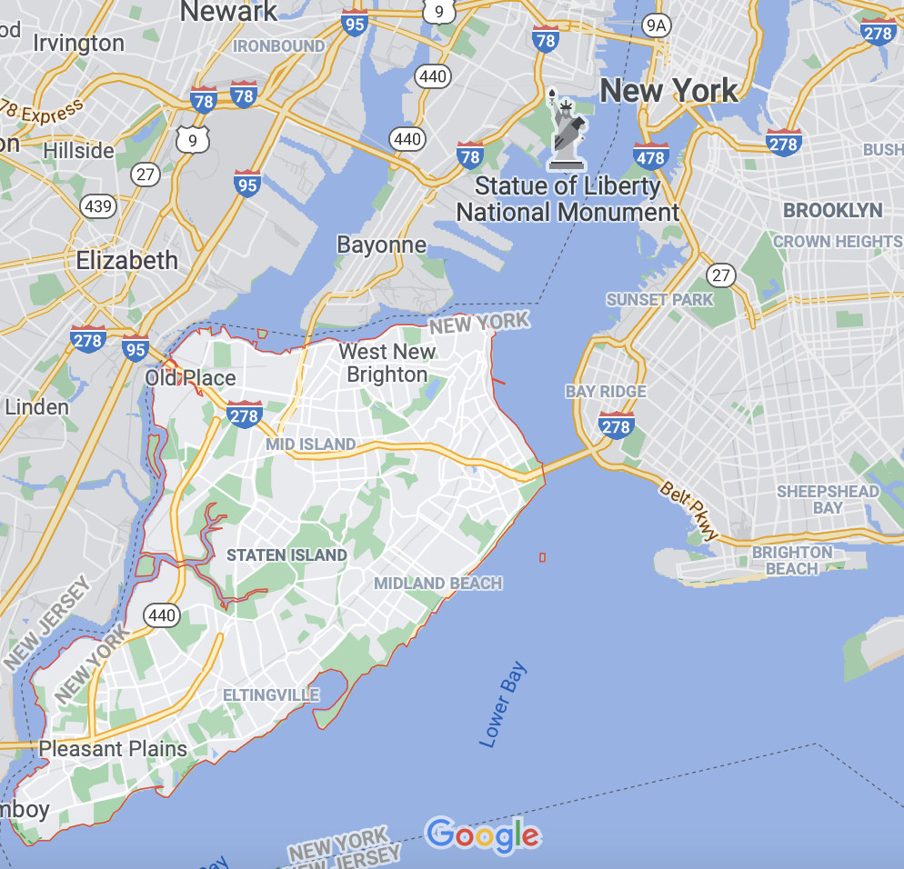
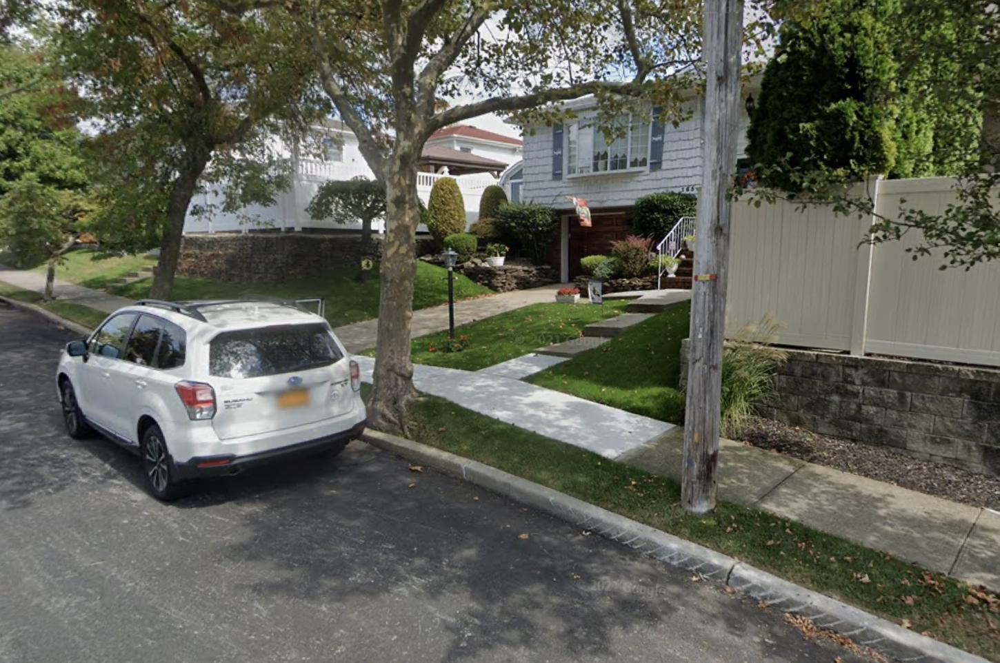
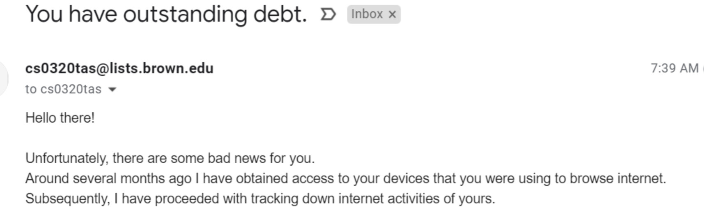

Security And Threat Modeling (All Too Briefly)¶
Security Notes
These notes are, in some places, more of an outline. They're meant to cover multiple class meetings' worth of content. There are a small set of slides to accompany today's notes.
What kinds of security threats are there? Are they always technical? How can engineers who aren't security experts (and taking one security class doesn't make you an expert) avoid gaps in their mental model of security?
Notes on agentic security aren't part of this chapter.
Side Channels¶
Please see the examples in the livecode repo. There are two files there: one is where we got in class, the other is a more complete version that (1) does a bit more work to get a stronger signal; and (2) uses the signal to guide brute-force search.
Anonymization¶
Today's discussion: Of Taxis and Rainbows. There's also a corresponding Hacker News thread.
Let's talk about the core anonymization issue that the article reported on.¶
- What's in the data, and what was anonymized?
- What did they do to anonymize the data before release?
- What went wrong? (how was the anonymization circumvented?)
- Is this attack a generally useful technique? For what?
- See my proof-of-concept code.
Takeaways:¶
- True anonymization is hard, and it's difficult if not impossible to undo mistakes.
- Often the legitimate interests of historians, social scientists, journalists and others may be competing with privacy interests. There is not always a single right answer, and there certainly isn't an absolute answer that is right for all such cases.
- When presented with such a situation in tech, think carefully. Seek advice if it's available on both the technical and non-technical angles. Here, the FOIA request was answered in 2 days.
Leaving the anonymization problems aside, what else could an adversary do with this data?¶
What can they do by de-anonymizing the driver and taxi? - What about the passengers? There's no identifying information, right?
- Is there any risk of correlation with other data?
Let's analyze this Hacker News exchange.¶
There were 2 arguments I thought were interesting near the top:
- "NYC is too dense for reasonable correlation"
- "nobody who lives in a non-dense part of NYC can afford to take a taxi anyway"
New York City is a lot more than skyscrapers. It includes, say, Staten Island:

Here's a random Google street view:

Take Malte's 2390, Julia's 1952B, and other such courses if you think this sort of thing is interesting. Most importantly, if you think of "social implications" as a separate thing from engineering, stop. It's not always inseparable, but it frequently is. As with much else, there's nuance.
Are there possible defenses against this?¶
Assume that you want to give weight to the historian's goals—you can't just say "no". We'll also ignore the specific obligations of the Freedom of Information Act to explore the design space.
Think, then click.
The historian needs data at the granularity of individual trips.
Here are some potential mitigations. Of course, if you find yourself in this situation for real, consult with experts rather than these notes. Crucially, none of these ideas is "perfect". Different situations warrant different approaches.
- Reduce the spatial detail: snap locations to a grid or add random noise. This might affect the ability to tell (e.g.) which corners people tend to pick up taxis, however. Perhaps we could adjust the level of noise by the density of the area.
- Reduce the temporal detail: report rides only at (e.g.) the per-hour granularity. This causes other problems for the historian, but also helps to preserve privacy.
- Provide opt-out options and provide both individual trips (for those who don't opt-out) and aggregate data (for those who do). This is admittedly difficult to implement for this specific case.
- Don't provide fields where certain very rare values (vs. the overall corpus) could aid deanonymization. Classic examples often involve self-reported ethnicity, gender identity, etc. Suppose I asked in an anonymous feedback form for your country of origin along with the usual survey. Then unless country-of-origin is pretty uniform, I might be able to deanonymize the data.
Humans and Threat Modeling¶
Some attacks are technical, others target humans.
Example: The Parler Data Leak¶
Some time ago, hackers were able to obtain nearly all data from the Parler website. It turns out that this was technically pretty easy to do, because of a variety of engineering decisions. These included:
- insecure direct object references: post IDs were consecutive, and so a
forloop could reliably and efficiently extract every post on the site. - no rate limiting: the above-mentioned
forloop could run quickly. - failure to scrub geo-location data from uploaded images: the physical location of users was compromised.
Combining multiple security mistakes tends to add up to more than the sum of the individual impacts.
Example: Phishing Email¶
Here's a screenshot of a real email someone received a couple of years ago.

There was a lot more to follow, carefully crafted to trigger fear and loss aversion in the recipient. The sender claimed that they would toss the (salacious and embarrassing) information they had in exchange for a bit of money... in Bitcoin, of course.
This is an example of a social engineering attack: no technical aspect of a system is compromised, but still its human or institutional facets can be hacked. Social engineering is pretty broad, but other examples include a hacker calling Google to reset your password, or a trojan-horse USB drive being left in a bank parking lot.
An Experiment¶
Here's a classical experiment in psychology.
Suppose you're shown four cards. The deck these cards have been taken from have colors on one side (either yellow or red), and numbers (between 1 and 100) on the other. At first, you only see one side of each. Perhaps you see:
You're asked to determine if these four cards obey a simple rule: if the card's number is even, then the card's color is red. The question is, which cards do you need to turn over to check the rule?
An Experiment (Part 2)¶
Suppose you're shown four cards. The deck these cards have been taken from have drink orders on one side (either juice or beer), and ages (between 1 and 100) on the other. At first, you only see one side of each. Perhaps you see:
You're asked to determine if these four cards obey a simple rule: if the drink order is alcoholic, then the age is no less than 21. The question is, which cards do you need to turn over to check the rule?
Psychological Context¶
These are called Wason Selection Tasks and have been studied extensively in psychology.
Surprisingly, humans tend to do poorly on the first task, but far better on the second. Why? Because context matters. If you can catch someone outside of their security mindset with an apparently rote task, you have a higher chance of exploiting them.
Good security involves far more than just the software. But whether or not we're talking about software or the human brain, bias can be attacked, and the attacker can abuse leaky abstractions.
A Cognitive Tool: Threat Modeling¶
We tend to think of security as being about confidentiality. But that's too limiting. Are there other kinds of security goals you might want?
Here are 6 very broad classes of goal, which together comprise the S.T.R.I.D.E. framework.
Please see the slides for brief context.
We're going to get practice with STRIDE using the cards by Adam Shostack (a noted security expert) for a game called Elevation of Privilege. Adam is the author of my favorite book on threat modeling, which is available in the Brown library. I strongly recommend using this book as a guide to mitigating the kinds of threats we'll identify today.
Happily, this semester I have actual hard-copies of this game to use in class today. We won't have time to play the game in full, but I want to use them as props to think about potential threats your term projects will face. Everyone should leave with at least one threat in mind.
The goal of this lecture isn't to "teach you to do proper threat modeling". That would take more than the half-hour or so we have for this section. Rather, I want to give you a taste of the discipline in the hope it's useful on your term projects.
If you're planning on specializing (or even sometimes engaging with) security concerns, you'd do well to explore the threat-modeling book and take other security-focused classes.